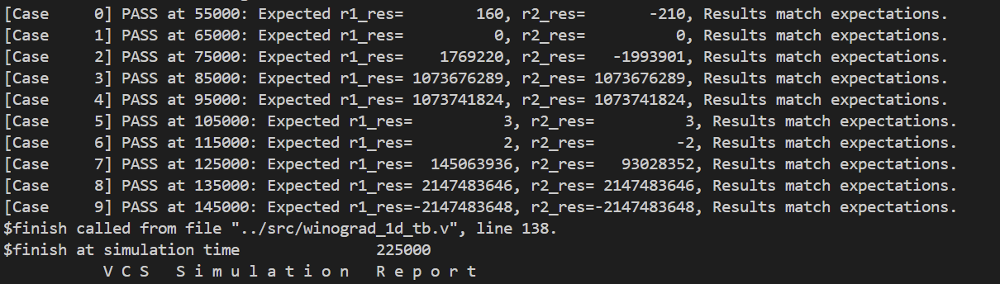

人工智能的硬件基石：从物理器件到计算架构 Lab1
1. 1D Winograd 实现 (50pts)
背景知识
- Winograd算法是一种用于加速卷积运算的高效算法，尤其在深度学习的卷积神经网络（CNN）中广泛应用。它通过减少乘法次数来优化计算，特别适合小尺寸卷积核。
- Winograd算法的核心思想是将卷积转化为多项式乘法，利用数论中的一些变换，将输入和滤波器映射到另一个空间进行更高效的计算。
- 例如对于一维卷积：
对于输入和滤权重，输出为2个元素。
- 原始计算方法：需6次乘法与4次加法。
- Winograd算法：通过变换将乘法次数降至4次（加法次数增加到8次），步骤如下：
- 将计算表示为：
其中：
- 将上面的计算过程写成矩阵的形式如下：，其中：
- 表示 Hadamard product，即对应位置相乘操作；
- 表示卷积核； 表示输入特征图（输入信号）；
- 表示卷积核变换矩阵；
- 表示输入变换矩阵；
- 表示输出变换矩阵；
有：
- 二维扩展：
通过嵌套一维变换实现，如，输入块为，输出为，乘法次数从36次降至16次。
任务介绍
本次Lab中，你需要实现一个卷积核大小固定的 1D winograd 卷积计算单元。计算单元的部分代码已经提供，你需要填补空缺的代码。
TOP module 位于 winograd_1d.v 中，虽然1D winograd可以完全通过组合逻辑完成计算，但是这会导致较大的延迟，阻碍系统时钟加快，因此，在此模块中我们将计算分为若干个阶段：
- 阶段1: 完成卷积核变换及输入变换；
- 阶段2: 完成Hadamard product与输出变换；
- 阶段3: 锁存计算结果并输出，
vld置1.
在完成后，你需要运行testbench来验证模块的功能。Testbench中包括计算的Golden Model，会自动比较你编写的模块输出与标准结果。
{kind=link}

程序结构
在课程共享文件的 /mnt/course_files 文档下，你能看到 Lab1 文件夹，其中 winograd 文件夹包含了此任务需要的代码。
├── run
│ ├── Makefile
│ └── winograd.f
└── src
├── input_transform.v (此处需要填空)
├── output_transform.v (此处需要填空)
├── weight_transform.v (此处需要填空)
├── winograd_1d_tb.v
└── winograd_1d.v (此处需要填空)Testbench 运行方法
不显示波形
进入 run 目录，运行 make rerun 即可运行模拟，同时不会显示波形，由于该操作不依赖于GUI，可以在VS Code中直接使用。由于在testbench中设置了 $monitor 命令，会输出不同时刻的计算结果，可以用于验证结果是否正确。
显示波形（使用verdi）
配合Verdi，可以显示电路运行过程中的波形。进入 run 目录，运行 make all 即可进行模拟并显示波形。由于依赖GUI，这一步骤需要使用远程桌面。
如运行成功，会自动弹出Verdi窗口，在Verdi窗口中，选择下方 Signal - Get All Signals 即可显示所有波形。

清除运行产生的临时文件
只要运行 make clean 即可清除所有运行产生的临时文件。
2. CORDIC算法 (50pts)
背景知识
- CORDIC（COordinate Rotation DIgital Computer）算法是一种基于迭代逼近的方法，通过一系列简单的加减法、移位以及查表操作实现三角函数等的计算。这种算法适用于硬件实现，无乘法器，降低芯片复杂度和功耗，特别适用于 FPGA、ASIC 等嵌入式系统。
- 工作原理：CORDIC 算法通过逐步旋转向量，将目标角度分解为一系列预定义的基本旋转角，每次旋转只需执行移位和加减法操作，从而逼近最终的旋转结果。算法可用于两种模式：旋转模式（计算旋转后的坐标）和向量模式（求取向量的幅值和相位）。
- 关于CORDIC具体的介绍可以参考以下资料：
任务介绍
本Lab中，你需要完成一个旋转模式的CORDIC计算模块，代码主体已经提供，你需要完成代码填空。
模块仅包含一个文件 cordic.v ，需要完成计算，你需要完成以下步骤：
- 由于CORDIC算法的收敛范围有限，你需要在开始迭代前，通过三角恒等变换，将输入转换到合适的象限；
- 进行迭代计算，本程序中设定的迭代次数为16次。
在完成后，你需要运行testbench来验证模块的功能。Testbench中包括计算的Golden Model，会自动比较你编写的模块输出与标准结果。
程序结构
在课程共享文件的 /mnt/course_files 文档下，你能看到 Lab1 文件夹，其中 cordic 文件夹包含了此任务需要的代码。
├── run
│ ├── cordic.f
│ └── Makefile
└── src
├── cordic_tb.sv
└── cordic.v (此处需要填空)Testbench 运行方法
Testbench 运行方法与 Winograd的一致。可以参考上方的介绍。
3. Bonus (Extra 50pts)
如有兴趣完成bonus任务，完成其一即可拿到bonus分数。
实现基于CORDIC的FFT
要完成此项任务，你需要完成一个8-point DIT-FFT
FFT 是一种将离散傅里叶变换（DFT）高效计算的算法。
Cooley–Tukey 算法是最常见的 FFT 实现方法，通过递归地将 DFT 分解成若干较小的 DFT，从而大幅降低计算复杂度。利用“蝶形运算”（butterfly operation），将输入数据按照特定方式重新组合，并在递归分解过程中使用周期性和对称性的特性进行高效计算。
可以参考Project页面提供的资料。
2D Winograd
2D Winograd可以由1D Winograd外推得到，假设一个卷积核尺寸为3x3的二维卷积，假设每次我们输出2x2个卷积点，则我们形式化此问题：F(2x2, 3x3)，你需要实现的模块就为这一尺寸。
因为输出为2x2，卷积核大小为3x3，对应的输入点数应该为4x4。
可以表示为：

也就是分块矩阵：
{kind=link}
形式上与1D Winograd就一致了。
可以参考Project页面提供的资料。